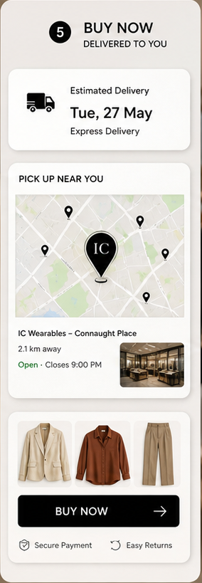

AI personal styling, made wearable
IC_wearables
Scan once. See your best colours, build complete outfits, and move from inspiration to purchase without guessing.
A premium styling layer that turns your face, season, and wardrobe into a clear buying decision.
IC_wearables is built for shoppers who want the confidence of a stylist with the speed of a mobile scan. The experience moves from analysis to palette to ready-to-buy pieces in one refined flow.
Scene 01
Scan your style in seconds.
The first interaction feels precise and private: a guided mirror scan, face read, and style DNA progress state before the recommendation engine opens up.
- Front-facing photo guidance
- Feature analysis progress
- Private profile creation

Scene 02
Your seasonal colour palette, made actionable.
The palette output does not stop at a label. It shows the season, neighbouring palettes, and a set of colours that can become clothes, accessories, and makeup choices.

Scene 03
Clothes that change the way your look reads.
IC_wearables connects palette logic to real outfit categories: tops, outerwear, bottoms, dresses, and complete combinations that already match the user.

Scene 04
Made for your real moments.
Work, dates, gifting, and daily dressing all get the same treatment: a polished recommendation that fits the moment instead of another generic product feed.
Scene 05
Buy now, or pick up nearby.
The final step feels like a premium retail handoff: delivery estimate, nearby boutique option, selected pieces, secure payment cues, and clear returns support.
Open the demo account
Personal read
Face, colour, and styling context are treated as one profile.
Edited wardrobe
Recommendations stay tight, seasonal, and easy to compare.
Retail ready
The path ends with delivery, pickup, or nearby store action.
Private beta
Try the premium demo account next.
The landing page hands off to the interactive IC_avatar demo so you can see the profile readout, outfit edit, and shopping workflow.
Demo account page
Jump directly into the profile readout section of the IC_avatar product demo.
Open demo account